Getting started
A side panel of tools for laying out, sizing, aligning and styling slides.
Open the panel
In PowerPoint, go to the Home tab and click Grid Panel in the Slide Panel group. Not installed yet? Follow the install guide.
Find your way around
Numbers and formulas
Every number box accepts maths and units: 12.5-2*0.42, 30pt, 1.5cm, 12mm. Plain numbers are inches.
The grid, in one minute
The grid area is the part of the slide your content sits in, set in Layout. g is the grid spacing: the basic step used for gaps, snapping and table sizes. col and row are one Layout column's width and one row's height, and can be used in formulas.
Tip: if your template has guides, open Arrange, choose Guides, and click Use in Layout at the More level. Layout then uses your template's exact spacing.
Layout
Plans columns and rows and draws them on the slide.
Use it to start a slide on a clean grid, or to line existing shapes up into columns.
Quick start
- Pick a preset (Thirds, Quarters...) or set Columns and Rows.
- Check the preview. The blue figure shows each cell's size.
- Click Draw on slide, or select shapes and click Fit selection.
Example
In the panel
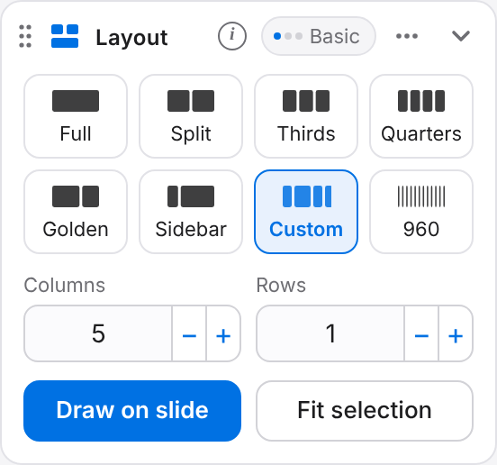
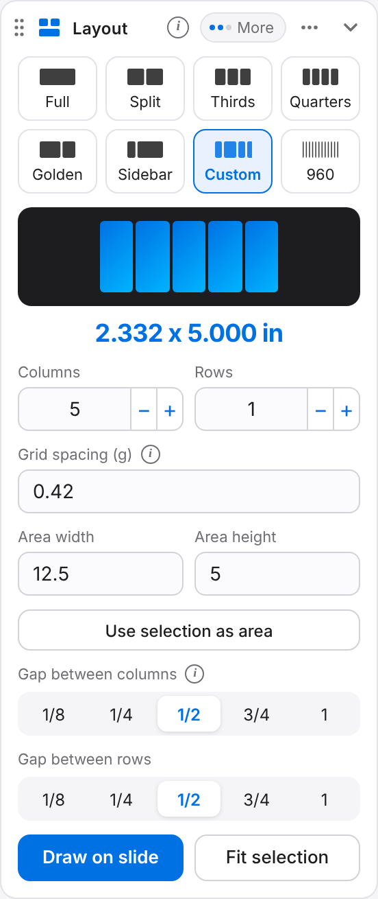
What each level shows
| Basic | Presets, columns and rows, Draw on slide, Fit selection. |
|---|---|
| More | Preview, grid spacing (g), area width and height, Use selection as area, gaps between columns and rows. |
| Full | Gap and grid figures, left and top position, rounded corners, group after drawing, save your own presets. |
Good to know
- Grid spacing (g) is the basic step used across the whole panel. Type
30ptto match a 30 pt guide grid. - Use selection as area sets the grid area from shapes already on the slide.
- Fit selection fills cells in reading order: top to bottom, then left to right.
Resize
Sets exact sizes using numbers or formulas.
Use it when shapes must be an exact width or height, or a number of columns wide.
Quick start
- Select one or more shapes.
- Type a width or height, such as
2col+gapor3in. - Press Enter or click Resize.
Example
In the panel
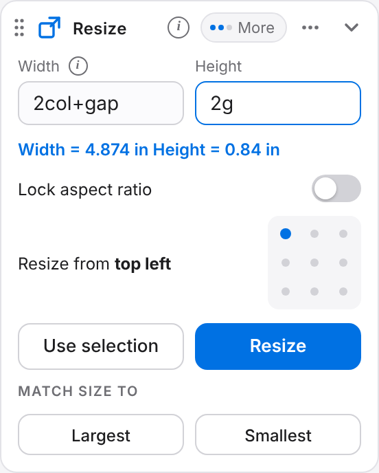
What each level shows
| Basic | Width, Height, Resize. |
|---|---|
| More | Live result, lock aspect ratio, resize from any of nine points, Use selection, match to largest or smallest. |
| Full | Recent formulas to reuse with one click. |
Good to know
- Names you can use:
ggrid spacing,colcolumn width,rowrow height,gapandvgap,wandhthe shape's current size. *2doubles the current size. Every number box in the panel accepts maths and units (in, pt, cm, mm).
Corners
Gives rounded rectangles an exact corner radius.
Use it so rounded boxes of different sizes share the same corner.
Quick start
- Select rounded rectangles.
- Type the radius in points, or pick a preset.
- Click Round selection.
Example
In the panel
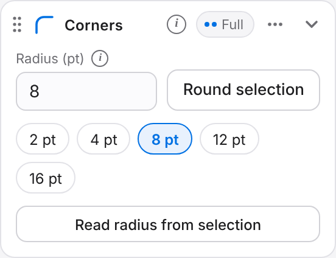
What each level shows
| Basic | Radius and Round selection. |
|---|---|
| Full | Radius presets and Read radius from a selected shape. |
Good to know
- Square rectangles can't be turned into rounded ones from the panel. Draw them as rounded rectangles first.
- Needs PowerPoint API 1.10.
Arrange
Lines up, spaces and snaps shapes.
Use it to tidy a slide: align edges, space shapes exactly, and snap them onto your grid or guides.
Quick start
- Select shapes.
- Click an align button, Across or Down to space them, or Snap.
Example
In the panel
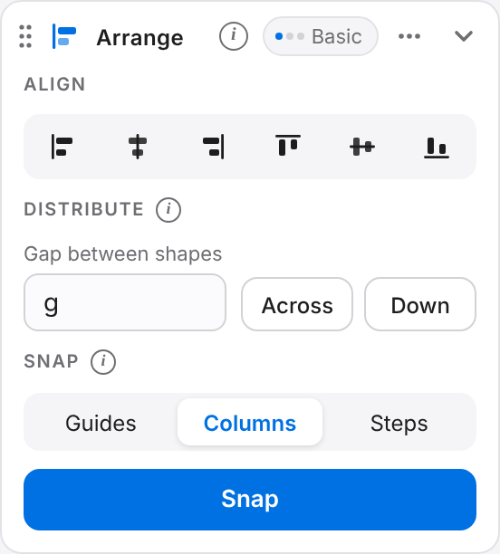
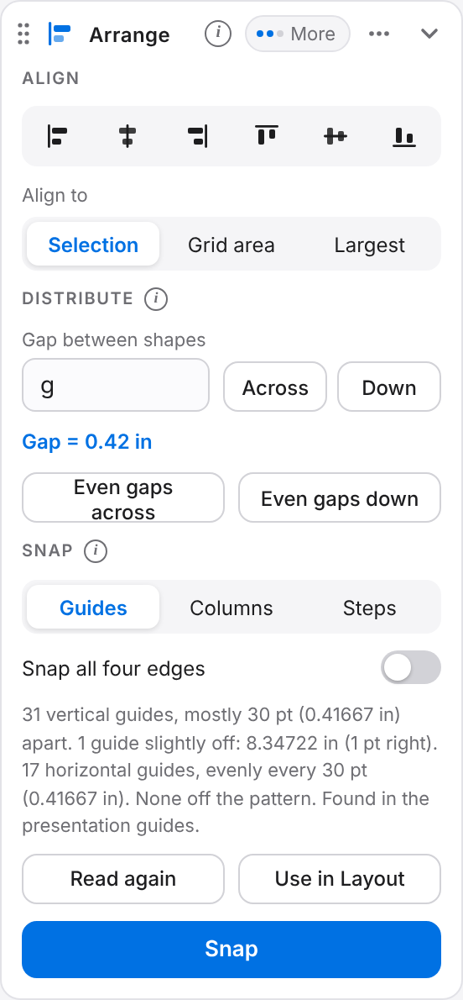
What each level shows
| Basic | Align buttons, distribute with an exact gap, snap mode and Snap. |
|---|---|
| More | Align to the selection, grid area or largest shape, even gaps, snap options, the guide report. |
| Full | Nudge by an amount, swap two shapes. |
Good to know
- Guides snaps to the guides you see on the slide, read from your template. Columns snaps to the Layout grid. Steps snaps to every g.
- The guide report at More shows the guide spacing and any guide that sits slightly off. Use in Layout copies the exact spacing into the Layout tool.
- If shapes drift further off the guides across the slide, the spacing is slightly off. Use in Layout fixes it.
Match
Selects shapes like the one you pick, and copies position and size.
Use it to restyle every similar shape at once, or to put a logo or title in the same spot on every slide.
Quick start
- Select an example shape.
- Choose what to match: fill colour, outline, shape style, text style, size or type.
- Click Select similar on slide. Use Next slide to keep going through the deck.
Example
In the panel
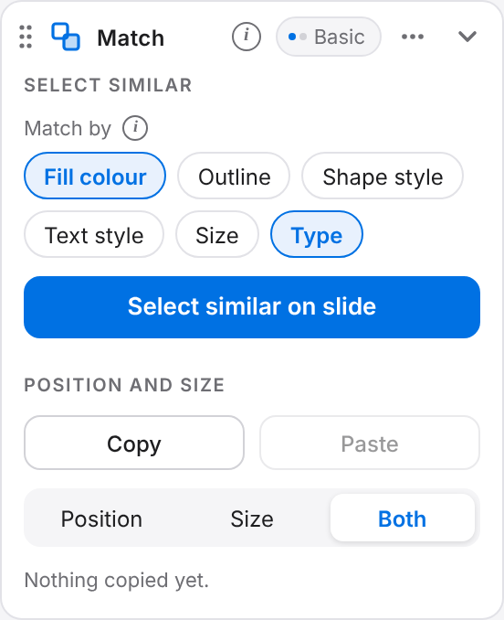
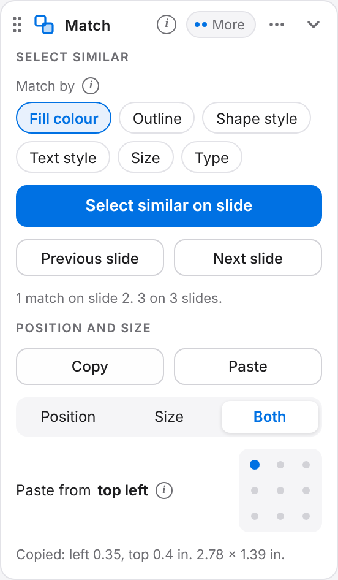
What each level shows
| Basic | Match by, Select similar on slide, Copy, Paste and Position, Size or Both. |
|---|---|
| More | Previous and Next slide with match counts, Paste from (which point lines up). |
Good to know
- PowerPoint selects shapes on one slide at a time, so Next slide jumps to the next slide with matches.
- Copy remembers a shape's position and size until the panel closes. Select shapes on another slide and click Paste.
Styles
Saves text formatting as reusable styles.
Use it to keep headings, body text and labels consistent, and to change them everywhere at once.
Quick start
- Select text and click Sample.
- Name the style and click Save.
- Select other text and click the style to apply it.
Example
In the panel
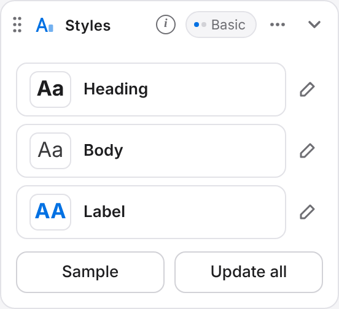
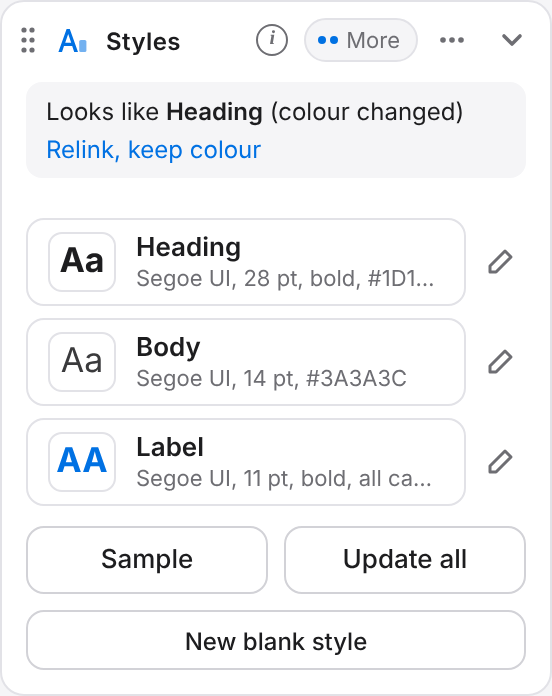
What each level shows
| Basic | Style list, Sample, Update all. |
|---|---|
| More | What the selected text uses, with Reset, Unlink and Relink. New blank style and a summary of each style. |
Good to know
- Edit a style, then click Update all to change every slide. Changes you made by hand on linked text are kept.
- Recoloured text that still looks like a style is offered as a lookalike. You can apply the style and keep its colour.
- Styles are saved in the presentation. Masters and layouts are never changed.
Shape styles
Saves a shape's look as a reusable style.
Use it for repeated elements such as cards, panels and callouts.
Quick start
- Select a shape and click Sample.
- Name the style and click Save.
- Select other shapes and click the style to apply it.
Example
In the panel
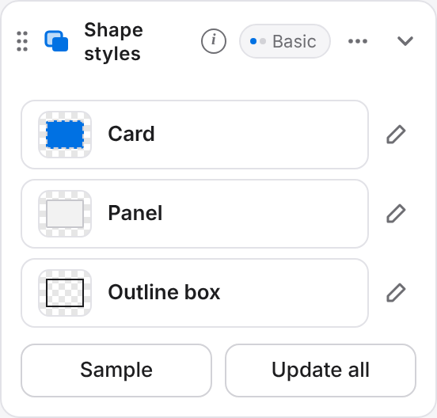
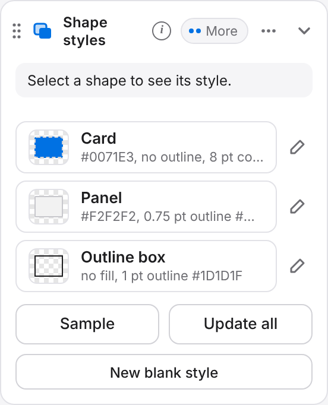
What each level shows
| Basic | Style list, Sample, Update all. |
|---|---|
| More | What the selected shape uses, New blank style, a summary of each style. |
Good to know
- A style covers fill, outline, corner radius, text box margins and alignment, and can include a text style.
- Update all keeps hand changes on linked shapes and offers lookalikes.
Colours
Applies theme, template and your own colours.
Use it to colour shapes and text with exact brand colours, without hunting through menus.
Quick start
- Choose Fill, Outline or Text.
- Select shapes or text.
- Click a swatch.
Example
In the panel
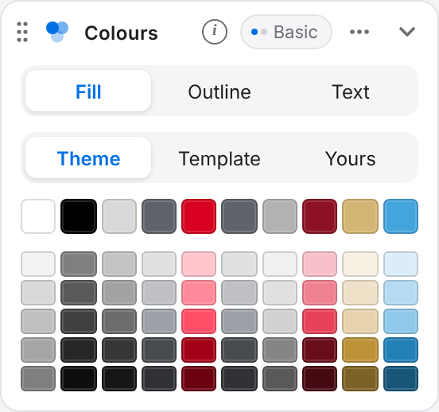
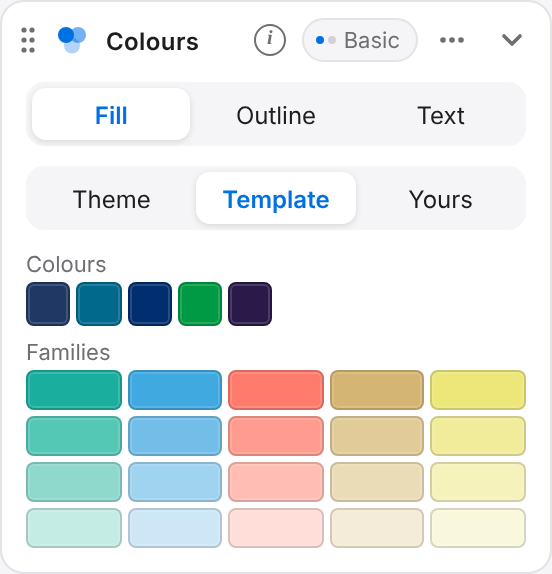
What each level shows
| Basic | Theme with tints and shades, Template colours and families, Yours. |
|---|---|
| More | Rename, reorder and remove your own colours. |
Good to know
- Theme and template colours come from the presentation and can't be changed here.
- Colouring styled text here keeps its text style link.
Tables
Formats a table in one click.
Use it to give every table the same rules, bands, fonts, padding and sizes, or to insert a table that is already formatted.
Quick start
- Select a table (click its border or any cell).
- Check the column chips: Category, Label or Data. Click a chip to change it.
- Click a style, or set rows and columns and click Insert table.
Example
In the panel
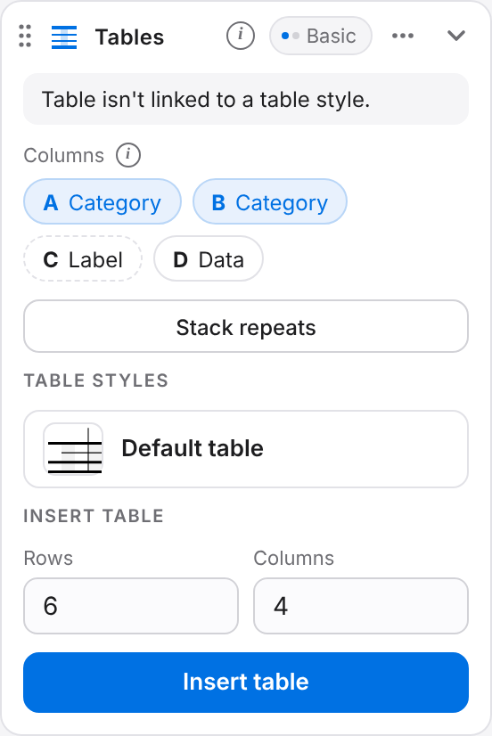
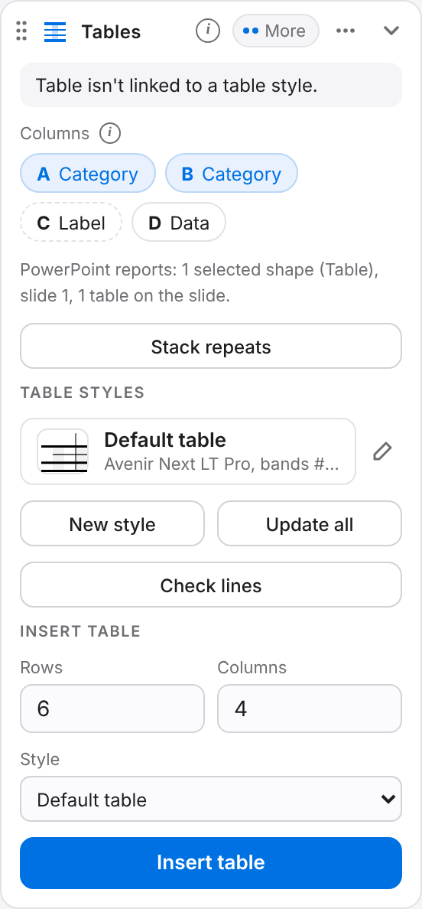
What each level shows
| Basic | Column chips, Stack repeats, table styles, Insert table. |
|---|---|
| More | Style editor, New style, Update all, Check lines, the style to insert with, selection details. |
Good to know
- Category columns hold stacked labels such as a year or team. Label columns hold row names. Data columns hold numbers.
- Rows that start with "Total" get a heavier rule above and bold text.
- Stack repeats blanks a category label that repeats the row above.
- Columns are whole steps of g and the table fills the grid area. Rows are 1g tall and grow in quarter steps when text wraps.
- The first time, Check lines asks which of two test lines you can see, because some PowerPoint versions show table lines the other way round.
Troubleshooting
| Old version | Close PowerPoint, empty %LOCALAPPDATA%\Microsoft\Office\16.0\Wef\, and open PowerPoint again. |
|---|---|
| Button missing | Check Home, Add-ins, My Add-ins. If it isn't there, close PowerPoint completely (including in Task Manager) and reopen. |
| Table not found | Click the table's border or put the cursor in a cell. At the More level, the Tables tool shows what PowerPoint reports about the selection. |
| Table lines look reversed | Run Check lines at the More level of the Tables tool and answer which test line you can see. |
| "Too old" message | Update Office from File, Account, Update Options, Update Now. |
| Add-ins blocked | Your IT team controls add-ins. Ask them to deploy Slide Tools from the Microsoft 365 admin center. |